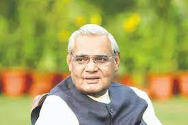

Shri Atal Bihari Vajpayee
Shri Atal Bihari Vajpayee, one of the most revered political leaders of India, was a multifaceted personality who left an indelible mark on Indian politics, society, and culture. He served as the 10th Prime Minister of India for six years from 1998 through 2004. He was also serving as Prime Minister from May 1996 through June 1996. He founded the Bharatiya Janata Party.
Achievements:
Atal Bihari Vajpayee's political career spanned over six decades,
during which he served as the Prime Minister of India thrice -
first for 13 days in 1996, then from 1998 to 1999, and finally
from 1999 to 2004. He was the first non-Congress Prime Minister to
complete a full five-year term in office. During his tenure, he
introduced several economic reforms and initiatives, including the
Golden Quadrilateral project, which aimed to connect India's major
cities through a network of highways.
He also launched several welfare schemes, such as the National Rural
Employment Guarantee Act (NREGA) and the Sarva Shiksha Abhiyan, to
improve the lives of the underprivileged sections of society. Under
his leadership, India became a nuclear power, with the successful
test of nuclear weapons in 1998.
Famous Poetries:
Atal Bihari Vajpayee was also known for his eloquent and poignant
poetry, which touched the hearts of millions of people across India.
Here are some of his most famous poems:
Kya Khoya Kya Paaya: This poem
reflects on the unpredictability of life and the fleeting nature of
time.,
Geet Naya Gata Hoon: In this
poem, Atal Bihari Vajpayee expresses his deep love for the country
and its people and his hope for a brighter future.,
Aao Phir Se Diya Jalayein: This
poem is a call for unity and peace in the face of adversity and
challenges.
Hawaon Se Lehra Ke Aaya: This
poem reflects on the beauty of nature and its ability to bring joy
and solace to the human spirit.
Jhanda Uncha Rahe Hamara: This
poem is a patriotic anthem that celebrates the greatness of India
and its people.
Nuclear Program:
Atal Bihari Vajpayee's tenure as Prime Minister was marked by his government's emphasis on national security and the country's nuclear program. In May 1998, India conducted five nuclear tests at the Pokhran test range in Rajasthan, which marked a significant milestone in the country's nuclear program. The tests were carried out under the leadership of Atal Bihari Vajpayee, who was praised by many for his strong leadership and decision-making during this critical period.
